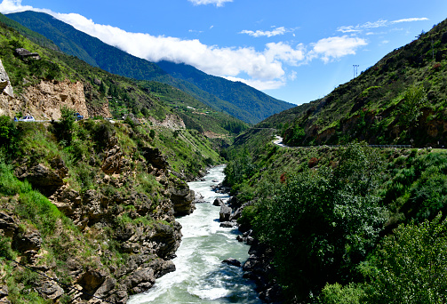
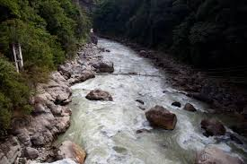
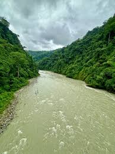
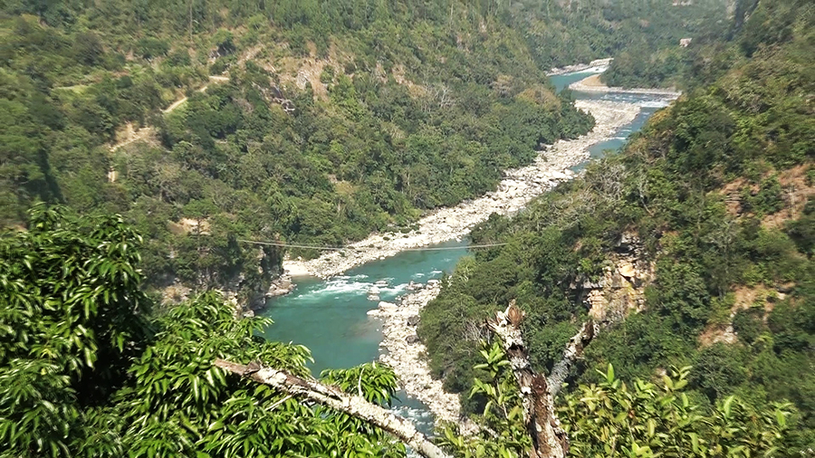

Rivers of Bhutan
The Rivers page was created to help visitors learn about the important rivers of Bhutan and their role in nature, culture, and daily life.
Bhutan’s rivers are important for farming, hydropower generation, tourism, and environmental conservation. They also support forests, wildlife, and local communities living near river valleys.
This page provides information about famous rivers such as Mo Chhu, Pho Chhu, Drangme Chhu, Wang Chhu, Mangde Chhu, and Manas River.
Visitors can explore the beauty, importance, and natural features of each river through pictures and descriptions.
The page also helps people understand how rivers contribute to Bhutan’s biodiversity and economy. Many rivers are connected to national parks, wildlife habitats, and eco-tourism activities such as rafting and sightseeing.
Bhutan’s rivers are known for their clean waters, beautiful mountain scenery, and importance to local communities. They play a major role in Bhutan’s environment and culture.
This page was made to promote awareness about protecting Bhutan’s rivers and preserving the country’s clean natural environment for future generations.
.jpg)
Mo Chhu River
Mo Chhu, meaning “Female River,” is one of the most important rivers in Bhutan. It flows through the beautiful Punakha Valley and originates from the glaciers of the northern Himalayas.
The river is famous for flowing beside the historic Punakha Dzong and supports local communities through agriculture and tourism.
Tourists enjoy rafting on the river because of its gentle currents and scenic mountain views.

Pho Chhu River
Pho Chhu means “Male River” in Dzongkha and is another major river of Bhutan. It flows from the northern glaciers through steep valleys before reaching Punakha.
The river is popular for white-water rafting and adventure tourism because of its fast currents and exciting rapids.
Pho Chhu joins the Mo Chhu near Punakha Dzong, creating one of the most beautiful river confluences in Bhutan.
.jpg)
Drangme Chhu
Drangme Chhu is the largest river system in Bhutan and flows through eastern Bhutan. The river travels through deep valleys and forests before joining the Brahmaputra River system in India.
The river is important for agriculture, fishing, and hydropower development. Many communities depend on it for water and farming activities.
Drangme Chhu is also rich in biodiversity and supports many species of birds, animals, and plants.

Wang Chhu
Wang Chhu is one of the most famous rivers in western Bhutan and flows through the capital city, Thimphu.
The river is important for hydropower projects, farming, and daily water use. Many villages and valleys are located along its banks.
The river later flows into India where it becomes known as the Raidak River.

Mangde Chhu
Mangde Chhu flows through central Bhutan and is known for its clean waters and beautiful mountain scenery.
The river is important for the Mangdechhu Hydroelectric Power Plant, one of Bhutan’s major hydropower projects.
It also supports forests, wildlife, and farming communities living nearby.

Amo Chhu
Amo Chhu is located in southwestern Bhutan and flows near the border town of Phuentsholing.
The river originates in the Himalayas and flows into India. It is important for trade, agriculture, and hydropower development.
The Amo Chhu valley is also known for its beautiful natural landscapes.

Kuri Chhu
Kuri Chhu is a major river in eastern Bhutan that flows through deep valleys and dense forests.
The river is famous for the Kurichhu Hydropower Plant, Bhutan’s first large hydropower project.
Kuri Chhu also creates a rich habitat for wildlife and supports nearby communities.

Sankosh River
The Sankosh River is one of Bhutan’s largest river systems and is formed by the meeting of the Mo Chhu and Pho Chhu rivers.
The river flows south into India and is important for agriculture, biodiversity, and hydropower development.
Its valleys are home to many species of plants and animals.

Manas River
The Manas River is a major transboundary river flowing through Bhutan and India. It passes through protected forests and wildlife habitats.
The river is closely connected with Royal Manas National Park and supports rich biodiversity including elephants, tigers, and rare birds.
It is considered one of the most ecologically important rivers in the region.